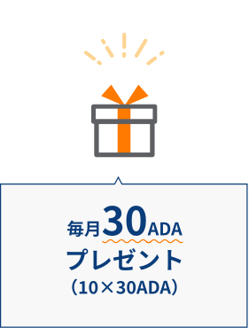
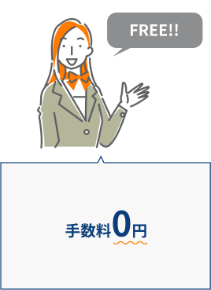
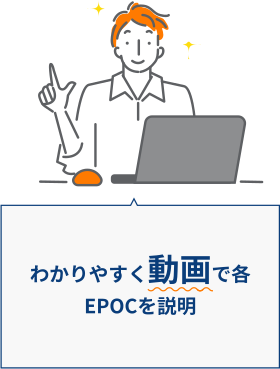
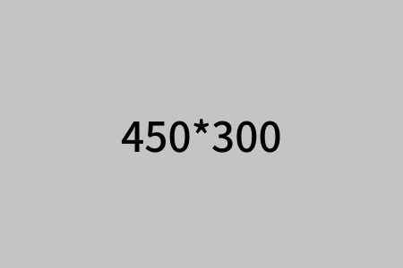

Staking
ステーキングについて
メリット

当プールに委託すると下記のようなメリットがあります。
- 
- 
- 
詳しくは動画をクリック！
運営体制
-
サーバーモニタリング


-
セキュリティ


-
アップデート


-
DDOS対策


プール基本情報
-
- ステッカー
- SIPO2
-
- プールID
- [Bech32][Bech32]：pool18rhzlrv83a7ygj7cp5uv8dx07qkn5drhe8nh6f3qvhv66xcyj2m
-
- プールID
- [hex]：38ee2f8d878f7c444bd80d38c3b4cff02d3a3477c9e77d262065d9ad
-
- マージン
- 2.5%
-
- コスト
- 340ADA
-
- 保証金
- 50.0 K
ステーキング手順
ステーキングとは
カルダノ・ネットワーク上で保有されているAdaは、ネットワーク内でのステークを表します。ステークの大きさは保有されているAdaの量に比例します。ステークを委任したり、誓約したりする能力は、カルダノの仕組みの基本となります。 Ada保有者が報酬を得るには、2つの方法があります。他の誰かが運営するステーク・プールに自分のステークを委任する方法と、自分自身のステークプールを運営する方法です。ウロボロス・プロトコルがブロック・チェーンに次のブロックを追加し、それによって金銭的な報酬を受け取るべき人（ステーク・プール）を選択します。その時にステーク・プールに委任されたステークの量が影響します。 ステーク・プールに委任されたステークが多ければ多いほど（一定のポイントまで）、次のブロックを作成する可能性が高くなります。報酬はそのステーク・プールに自分のステークを委任した人全員へ分配されます
カルダノ・ネットワーク上で保有されているAdaは、ネットワーク内でのステークを表します。ステークの大きさは保有されているAdaの量に比例します。ステークを委任したり、誓約したりする能力は、カルダノの仕組みの基本となります。 Ada保有者が報酬を得るには、2つの方法があります。他の誰かが運営するステーク・プールに自分のステークを委任する方法と、自分自身のステークプールを運営する方法です。ウロボロス・プロトコルがブロック・チェーンに次のブロックを追加し、それによって金銭的な報酬を受け取るべき人（ステーク・プール）を選択します。その時にステーク・プールに委任されたステークの量が影響します。 ステーク・プールに委任されたステークが多ければ多いほど（一定のポイントまで）、次のブロックを作成する可能性が高くなります。報酬はそのステーク・プールに自分のステークを委任した人全員へ分配されます